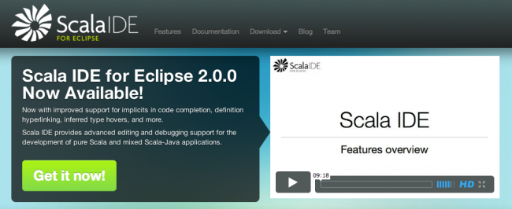

Scala IDE para Eclipse 2.0, nuevas funcionalidades y mayor integración
Txema Rodríguez, Sat, 24 Dec 2011 10:07:53 GMT

Después de meses de intenso trabajo por parte de la comunidad ya está disponible Scala IDE 2.0 para Eclipse. Esta versión se centra en una perfecta integración con las herramientas de Eclipse en Java, proporcionando muchas de las características que los usuarios habituados de Eclipse esperan al programar con Scala.
En lineas generales esta nueva versión de Scala IDE para Eclipse trae consigo una compilación más rápida, una mejor depuración del código y mayor integración con herramientas Java ya establecidas como es Maven.
Algunas de las características de Scala IDE 2.0
- Información de errores según estamos codificando. Algo de lo que ya estamos todos acostumbrados y que nos ahorra tiempo en los fallos más comunes de sintaxis y de definición de método o variables.
- Seguimiento de dependencias. Nos permite construir nuestras aplicaciones con las dependencias necesarias, según los requerimientos del código escrito.
- Navegación entre el código mediante hiperenlace. Otra de las cosas fundamentales en las que andamos acostumbrados en Eclipse para saltar de un método a otro.
- Deducción del tipo que compilador asume con tan sólo pasar el ratón por encima. Útil para descubrir si el compilador ha interpretado la variable de una forma distinta a lo que pretendíamos.
- Autocompletado de código tanto de la sintaxis común de Scala como de los agregados de forma implícita de nuestras propias clases y miembros.
Aprovechando este cambio de versión también se ha rediseñado la web de Scala IDE, junto con la documentación que incluye interesantes Screencast para sacarle el máximo partido a Scala integrado con Eclipse. También cuenta con un repositorio público en Github para contribuir en el proyecto.
Más información | Scala IDE
Repositorio | Scala IDE (GitHub)